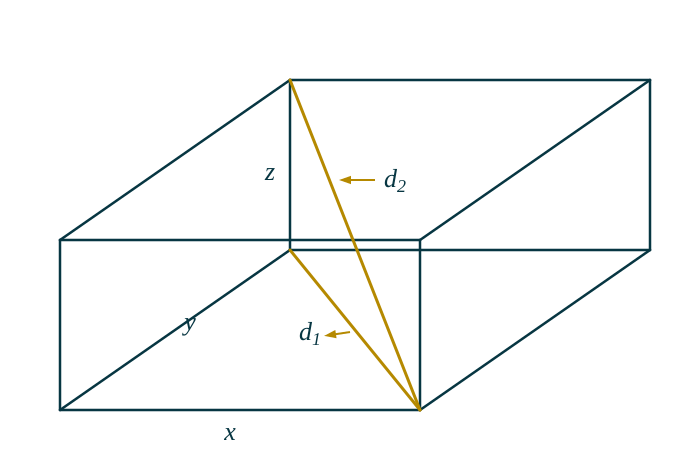
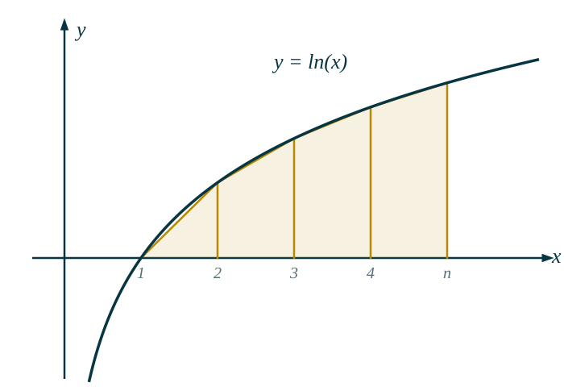
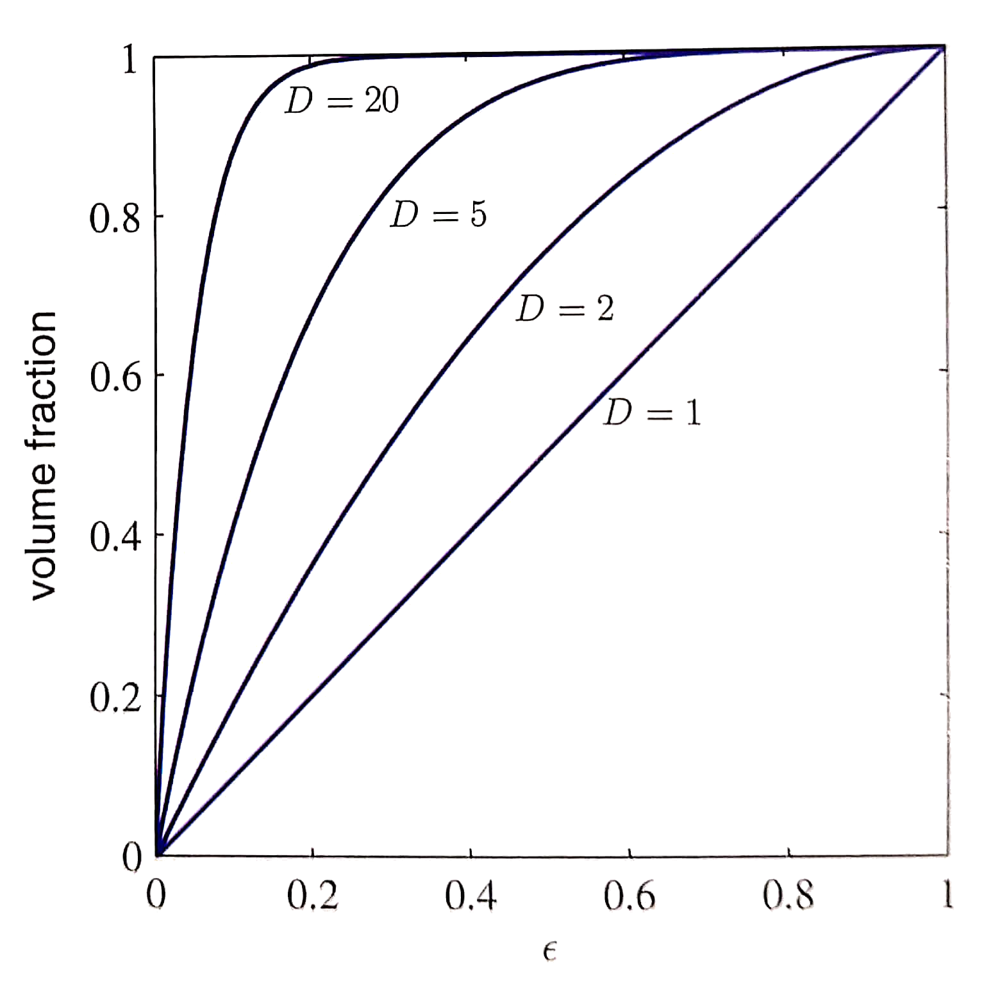
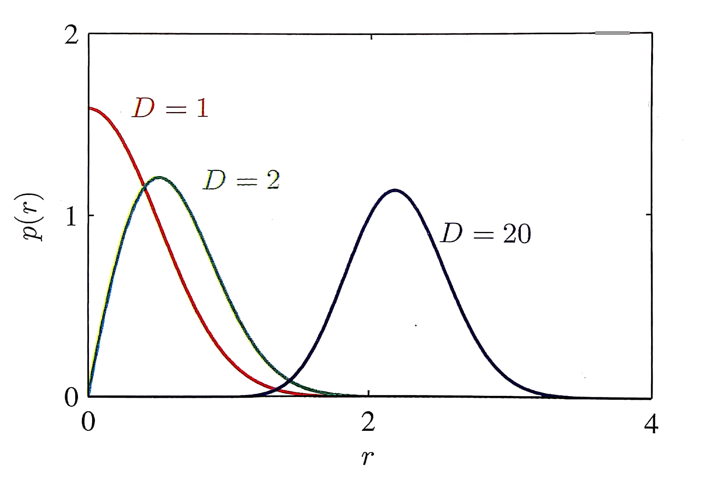
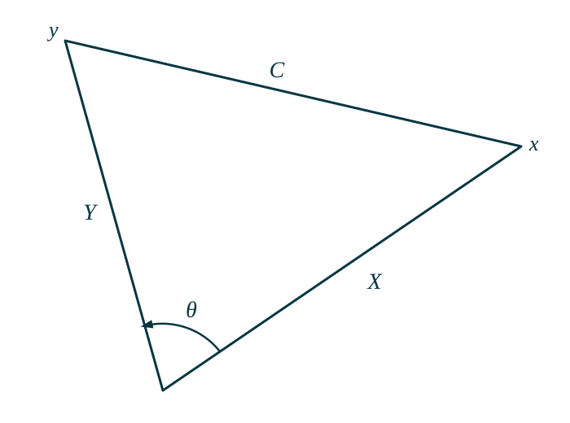
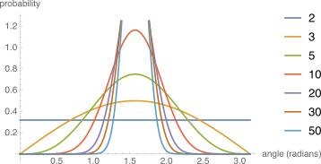
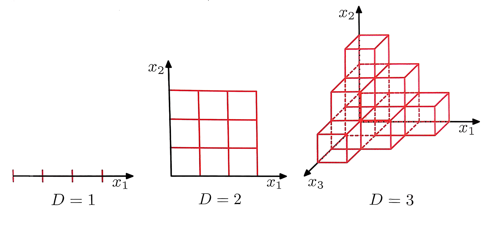
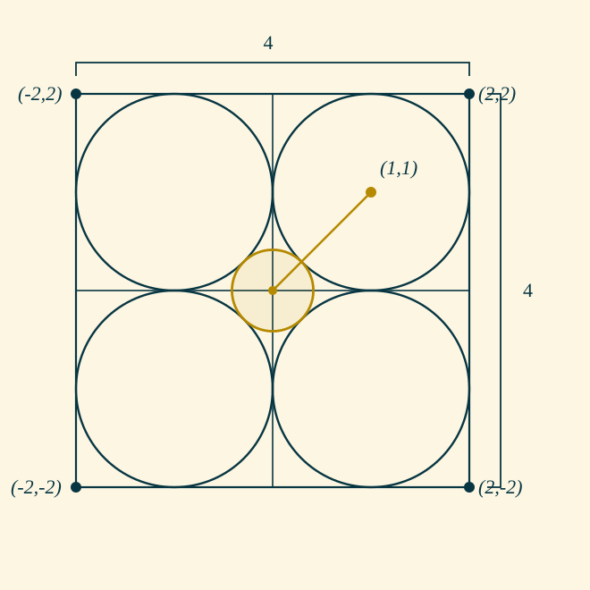

CS8850
Advanced Machine Learning

| # | date | topic | description |
|---|---|---|---|
| 1 | 24-Aug-2026 | Introduction | |
| 2 | 26-Aug-2026 | Foundations of learning | Drop/Add |
| 3 | 31-Aug-2026 | PAC learnability | HW1 |
| 4 | 02-Sep-2026 | Linear learning models | |
| 5 | 07-Sep-2026 | Labor Day Holiday | Holiday |
| 6 | 09-Sep-2026 | Principal Component Analysis | Project ideas |
| 7 | 14-Sep-2026 | Curse of Dimensionality | HW2, HW1 due |
| 8 | 16-Sep-2026 | Bayesian Decision Theory | |
| 9 | 21-Sep-2026 | Parameter estimation: MLE | |
| 10 | 23-Sep-2026 | Parameter estimation: MAP & NB | finalize teams |
| 11 | 28-Sep-2026 | Logistic Regression | HW3, HW2 due |
| 12 | 30-Sep-2026 | Kernel Density Estimation | |
| 13 | 05-Oct-2026 | Support Vector Machines | |
| 14 | 07-Oct-2026 | Matrix Factorization | |
| 15 | 12-Oct-2026 | * Midterm | Exam, HW3 due |
| 16 | 14-Oct-2026 | k-means clustering | |
| 17 | 19-Oct-2026 | Invited: Intro to Causal Learning I |
| # | date | topic | description |
|---|---|---|---|
| 18 | 21-Oct-2026 | Invited: Intro to Causal Learning II | |
| 19 | 26-Oct-2026 | * Mid-point projects checkpoint | HW4, P |
| 20 | 28-Oct-2026 | Expectation Maximization | |
| 21 | 02-Nov-2026 | Stochastic Gradient Descent | |
| 22 | 04-Nov-2026 | Automatic Differentiation | |
| 23 | 09-Nov-2026 | Nonlinear embedding approaches | HW5, HW4 due |
| 24 | 11-Nov-2026 | Model comparison | |
| 25 | 16-Nov-2026 | Model Calibration | |
| 26 | 18-Nov-2026 | Convolutional Neural Networks | |
| 27 | 23-Nov-2026 | Thanksgiving Break | Holiday |
| 28 | 25-Nov-2026 | Thanksgiving Break | Holiday |
| 29 | 30-Nov-2026 | Word Embedding | |
| 30 | 02-Dec-2026 | Project Final Presentations | HW5 due, P |
| 31 | 07-Dec-2026 | Presentation spillover / Exam prep | Classes End |
| 32 | 09-Dec-2026 | * Final Exam | Exam |
| 33 | 16-Dec-2026 | Project Reports | due |
| 34 | 17-Dec-2026 | Grades due 5 p.m. | PAWS |

$ D^2 = \sum_{i=1}^{n} x^2_{i} $
| $n$ | Stirling | True | Stirling/True |
|---|---|---|---|
| 1 | 0.92214 | 1 | 0.92214 |
| 2 | 1.91900 | 2 | 0.95950 |
| 3 | 5.83621 | 6 | 0.97270 |
| 4 | 23.50618 | 24 | 0.97942 |
| 5 | 118.01917 | 120 | 0.98349 |
| 6 | 710.07818 | 720 | 0.98622 |
| 7 | 4,980.3958 | 5,040 | 0.98817 |
| 8 | 39,902.3955 | 40,320 | 0.98964 |
| 9 | 359,536.87 | 362,880 | 0.99079 |
| 10 | 3,598,695.6 | 3,628,800 | 0.99170 |
| Dimension $n$ | Coefficient $C_n$ | |
|---|---|---|
| 1 | 2 | = 2.0000... |
| 2 | $\pi$ | = 3.14159... |
| 3 | $4\pi/3$ | = 4.18879... |
| 4 | $\pi^2/2$ | =4.93480... |
| 5 | $8\pi^2/15$ | =5.26379... |
| 6 | $\pi^3/6$ | =5.16771... |
| 7 | $16\pi^3/105$ | =4.72477... |
| 8 | $\pi^4/24$ | =4.05871... |
| 9 | $32\pi^4/945$ | =3.29851... |
| 10 | $\pi^5/120$ | =2.55016... |
| $2k$ | $\pi^k/k!$ | $\to 0$ |
What volume fraction of a hyper-melon does the rind occupy if it takes up an $\epsilon$ fraction of its radius?






"Abandon common sense, all ye who enter $\mathbb{R}^D$ ($D \gg 3$)."